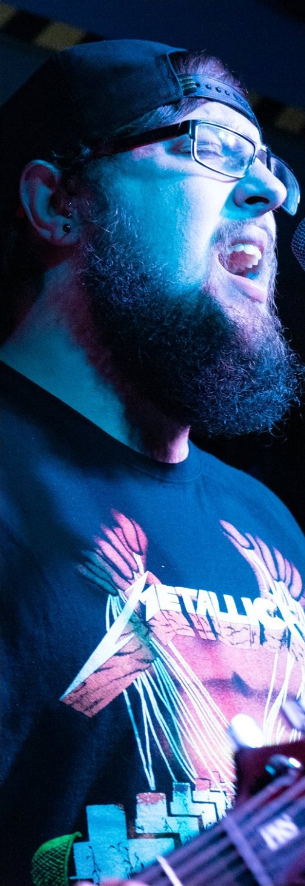
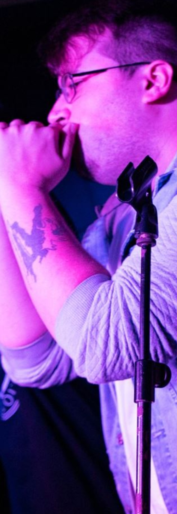
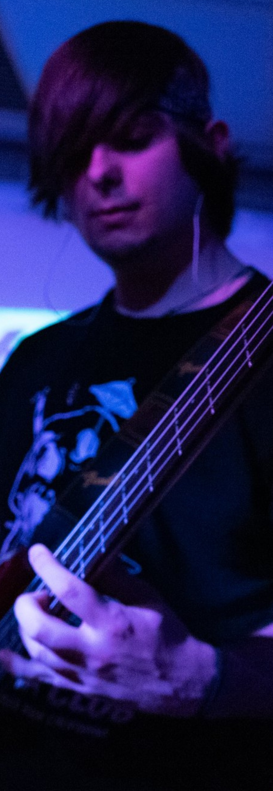
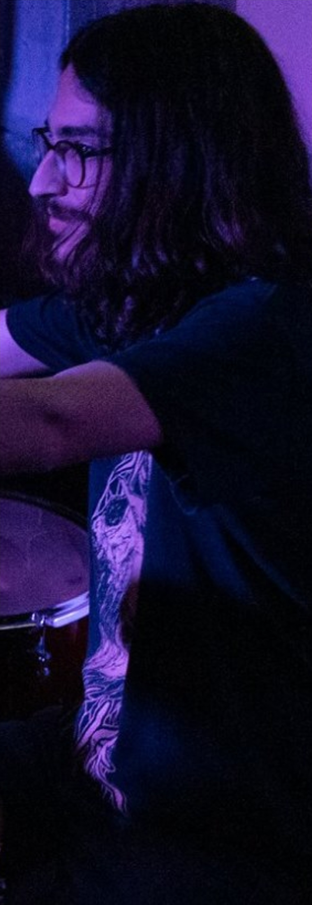
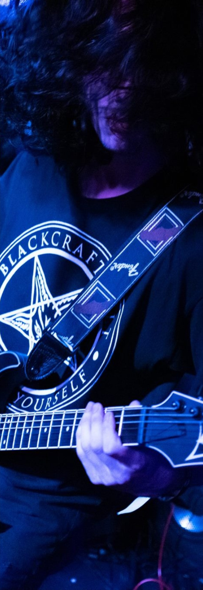
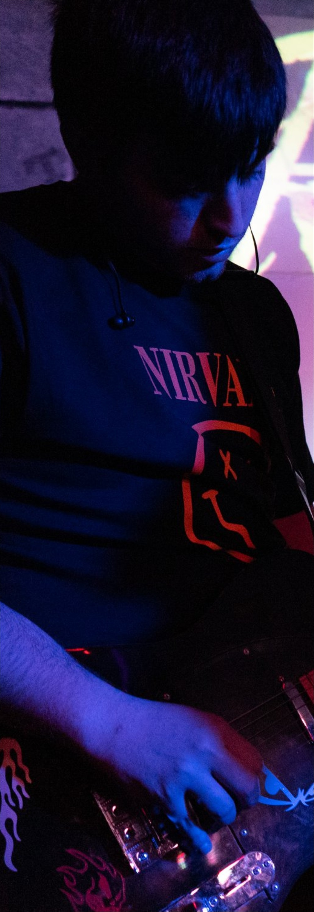

|  |  |  |  |  |  |
Rise on fire es un grupo de música metalcore/posthardcore creado en el año 2016. Antes se le conocía como Black Leviathan y
actualmente cuenta con 6 miembros. Rise empezó tocando covers de grupos conocidos como Bring me the Horizon, Nirvana,
Linking Park, Slipknot, System of a Down, etc. Y poco a poco ha ido componiendosus propias canciones. Empezó ensayando en
Espais Joves de la cuidad de Palma de Mallorca, y años después ha cambiado su lugar de ensayo a es Gremi. Además, Rise
ya ha actuado en varios conciertos, Ratapinyada Halloween 2018, Ratapinyanda Semana Santa 2019, Tunnel Rock Club
y Youth Fest Palma 2019